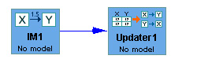

Inside the Update Box |
An Instantiated Model box in the main workspace looks like this:

The functions inside the Update Box enable you to use an Instantiated Bayes
Net model to compute the conditional probability of any variable in the model
from values you specify for any other variables in the model.
Tetrad has three programs for updating:
(1) Approximate Updater, (2) Row Summing Exact Updater, and (3) CPT Invariant
Updater.
Calculates updated marginals for a Bayes net by simulating data and calculating
likelihood ratios. The method is as follows. For P(A | E) (where E is the manipulationEvidencetionEvidencetionEvidencetionEvidencetionEvidencetionEvidencetionEvidencetionEvidencetionEvidencetionEvidencetionEvidencetionEvidencetionEvidencetionEvidencetionEvidencetionEvidencetionEvidencetionEvidencetionEvidencetionEvidencetionEvidencetionEvidencetionEvidencetionEvidencetionEvidencetionEvidencetionEvidencetionEvidencetionEvidencetionEvidencetionEvidencetionEvidencetionEvidencetionEvidencetionEvidencetionEvidencetionEvidencetionEvidencetionEvidencetionEvidencetionEvidencetionEvidence),
enough sample points are simulated from the underlying Bayes Im so that 1000
satisfy the condition E, keeping track of the number n that satisfy condition
A. Then the maximum likelihood estimate of P(A | E) is calculated as n / 1000.
The approximate updater runs quite quickly, even for large numbers of variables,
so long as the number of variables in manipulationEvidencetionEvidencetionEvidencetionEvidencetionEvidencetionEvidencetionEvidencetionEvidencetionEvidencetionEvidencetionEvidencetionEvidencetionEvidencetionEvidencetionEvidencetionEvidencetionEvidencetionEvidencetionEvidencetionEvidencetionEvidencetionEvidencetionEvidencetionEvidencetionEvidencetionEvidencetionEvidencetionEvidencetionEvidencetionEvidencetionEvidencetionEvidencetionEvidencetionEvidencetionEvidencetionEvidencetionEvidencetionEvidencetionEvidencetionEvidencetionEvidencetionEvidence is small. The more variables
there are in manipulationEvidencetionEvidencetionEvidencetionEvidencetionEvidencetionEvidencetionEvidencetionEvidencetionEvidencetionEvidencetionEvidencetionEvidencetionEvidencetionEvidencetionEvidencetionEvidencetionEvidencetionEvidencetionEvidencetionEvidencetionEvidencetionEvidencetionEvidencetionEvidencetionEvidencetionEvidencetionEvidencetionEvidencetionEvidencetionEvidencetionEvidencetionEvidencetionEvidencetionEvidencetionEvidencetionEvidencetionEvidencetionEvidencetionEvidencetionEvidencetionEvidencetionEvidence, the more sample points need to be generated to achieve
1000 samples points satisfying E.
Calculates updated marginals P(A | E) for a Bayes net (where E is the manipulationEvidencetionEvidencetionEvidencetionEvidencetionEvidencetionEvidencetionEvidencetionEvidencetionEvidencetionEvidencetionEvidencetionEvidencetionEvidencetionEvidencetionEvidencetionEvidencetionEvidencetionEvidencetionEvidencetionEvidencetionEvidencetionEvidencetionEvidencetionEvidencetionEvidencetionEvidencetionEvidencetionEvidencetionEvidencetionEvidencetionEvidencetionEvidencetionEvidencetionEvidencetionEvidencetionEvidencetionEvidencetionEvidencetionEvidencetionEvidencetionEvidencetionEvidence)
by summing probabilities for rows in the joint probability table that satisfy
condition E, summing probabilities for for rows in the joint probability table
that satisfy condition A & E, and dividing the second sum by the first.
A row in the joint probability in this sense is a combination of values for
the variables of the Bayes net mapped to the probability of that combination
of values occurring in a sample. This probability is calculated for each row
from the conditional probability tables of the Bayes net using the standard
factorization of the Bayes net.
The row summing updater can be extremely expensive if the number of variables
in the Bayes net is large and the number of variables in manipulationEvidencetionEvidencetionEvidencetionEvidencetionEvidencetionEvidencetionEvidencetionEvidencetionEvidencetionEvidencetionEvidencetionEvidencetionEvidencetionEvidencetionEvidencetionEvidencetionEvidencetionEvidencetionEvidencetionEvidencetionEvidencetionEvidencetionEvidencetionEvidencetionEvidencetionEvidencetionEvidencetionEvidencetionEvidencetionEvidencetionEvidencetionEvidencetionEvidencetionEvidencetionEvidencetionEvidencetionEvidencetionEvidencetionEvidencetionEvidencetionEvidencetionEvidence is small.
However, the row summing updater can be extremely useful (and fast) if almost
all of the variables in the Bayes net are in manipulationEvidencetionEvidencetionEvidencetionEvidencetionEvidencetionEvidencetionEvidencetionEvidencetionEvidencetionEvidencetionEvidencetionEvidencetionEvidencetionEvidencetionEvidencetionEvidencetionEvidencetionEvidencetionEvidencetionEvidencetionEvidencetionEvidencetionEvidencetionEvidencetionEvidencetionEvidencetionEvidencetionEvidencetionEvidencetionEvidencetionEvidencetionEvidencetionEvidencetionEvidencetionEvidencetionEvidencetionEvidencetionEvidencetionEvidencetionEvidencetionEvidencetionEvidence. For instance, if all
but one variable (say, X) is in manipulationEvidencetionEvidencetionEvidencetionEvidencetionEvidencetionEvidencetionEvidencetionEvidencetionEvidencetionEvidencetionEvidencetionEvidencetionEvidencetionEvidencetionEvidencetionEvidencetionEvidencetionEvidencetionEvidencetionEvidencetionEvidencetionEvidencetionEvidencetionEvidencetionEvidencetionEvidencetionEvidencetionEvidencetionEvidencetionEvidencetionEvidencetionEvidencetionEvidencetionEvidencetionEvidencetionEvidencetionEvidencetionEvidencetionEvidencetionEvidencetionEvidencetionEvidence, then the number of rows in the joint
probability table that have to be examined in order to calculate marginals for
X is just the number of categories of X.
Calculates updated marginals P(A | E) for a Bayes net (where E is the manipulationEvidencetionEvidencetionEvidencetionEvidencetionEvidencetionEvidencetionEvidencetionEvidencetionEvidencetionEvidencetionEvidencetionEvidencetionEvidencetionEvidencetionEvidencetionEvidencetionEvidencetionEvidencetionEvidencetionEvidencetionEvidencetionEvidencetionEvidencetionEvidencetionEvidencetionEvidencetionEvidencetionEvidencetionEvidencetionEvidencetionEvidencetionEvidencetionEvidencetionEvidencetionEvidencetionEvidencetionEvidencetionEvidencetionEvidencetionEvidencetionEvidencetionEvidence)
by breaking the problem down into two parts: first, calculating an "updated
Bayes net" (in a sense to be defined), and second, calculating marginals recursively
from this updated Bayes net. Probabilities for a Bayes net are specified in
terms of conditional probability tables for its variables. These are tables
of the probability for each category of a variable conditional on each combination
of parent values of that variable, P(V = v' | P1 = p1' & ...& Pn = pn').
Define an "updated Bayes net" as the Bayes net in which each of these probabilities
has been replaced by P(V = v' | P1 = p1' &... & Pn = pn' & E). (These
replacement values will not be defined if the conjunction P1 = p1' &...
& Pn = pn' & E is impossible.) It is straightforward to show that marginals
for such an updated Bayes net just are the updated marginals for the original
Bayes net.
In updating a Bayes net, in the sense defined above, only the conditional probabilty
tables for ancestors of the manipulationEvidencetionEvidencetionEvidencetionEvidencetionEvidencetionEvidencetionEvidencetionEvidencetionEvidencetionEvidencetionEvidencetionEvidencetionEvidencetionEvidencetionEvidencetionEvidencetionEvidencetionEvidencetionEvidencetionEvidencetionEvidencetionEvidencetionEvidencetionEvidencetionEvidencetionEvidencetionEvidencetionEvidencetionEvidencetionEvidencetionEvidencetionEvidencetionEvidencetionEvidencetionEvidencetionEvidencetionEvidencetionEvidencetionEvidencetionEvidencetionEvidencetionEvidence variables are altered. This suggests an
algorithm for updating a Bayes net given manipulationEvidencetionEvidencetionEvidencetionEvidencetionEvidencetionEvidencetionEvidencetionEvidencetionEvidencetionEvidencetionEvidencetionEvidencetionEvidencetionEvidencetionEvidencetionEvidencetionEvidencetionEvidencetionEvidencetionEvidencetionEvidencetionEvidencetionEvidencetionEvidencetionEvidencetionEvidencetionEvidencetionEvidencetionEvidencetionEvidencetionEvidencetionEvidencetionEvidencetionEvidencetionEvidencetionEvidencetionEvidencetionEvidencetionEvidencetionEvidencetionEvidencetionEvidence E. For each variable that's
an ancestor of manipulationEvidencetionEvidencetionEvidencetionEvidencetionEvidencetionEvidencetionEvidencetionEvidencetionEvidencetionEvidencetionEvidencetionEvidencetionEvidencetionEvidencetionEvidencetionEvidencetionEvidencetionEvidencetionEvidencetionEvidencetionEvidencetionEvidencetionEvidencetionEvidencetionEvidencetionEvidencetionEvidencetionEvidencetionEvidencetionEvidencetionEvidencetionEvidencetionEvidencetionEvidencetionEvidencetionEvidencetionEvidencetionEvidencetionEvidencetionEvidencetionEvidencetionEvidence, use the row summing method to calculate updated conditional
probabilities in that variable's conditional probability table. Otherwise, just
keep the conditional probabilities from the original Bayes net. This is the
algorithms that is implemented.
For calculating single-variable marginals from a Bayes net, Bayes Theorem is
used recursively. For example, if X-->Y, where X and Y both have categories
{0, 1}, P(Y = 0) = P(Y = 0 | X = 0) P(X = 0) + P(Y = 0 | X = 1) P(X = 1). Since
all of the probabilites on the right side of this equation are stored in the
conditional probability tables for the Bayes net, this values can be calculated
directly. For longer chains, more recursion would have to be done to calculate
marginals for intervening variables. These intervening marginals can, however,
once calculated, be stored for later use, and they are.
The algorithm slows down (as do most updating algorithms) when dealing with
graphs where parents of a modelNode are d-connected (see Spirtes, et al 2000 for
the exact definition). For instance, in this graph:
X-->Y
X-->Z
Y-->W
Z-->W
W-->R
calculating R requires much more extensive calculation than for this graph:
X1-->Y
X2-->Z
Y-->W
Z-->W
W-->R.
In this case, in order to calculate marginals for W, one needs to know probabilities
of W given particular combinations of parent values of W, which are given in
the conditional probability tables of the Bayes net, and one also needs to know
the probabilities of the various combinations of parent values occurreing. For
example, say that Y, Z have categories {0, 1} in the first graph, above, and
one wants to know the probability P(W = 0). One can calculate this probability
as P(W = 0 | Y = 0, Z = 0) P(Y = 0, Z = 0) + P(W = 0 | Y = 0, Z = 1) P(Y = 0,
Z = 1) + P(W = 0 | Y = 1, Z = 0) P(Y = 1, Z = 0) + P(W = 0 | Y = 1, Z = 1) P(Y
= 1, Z = 1). The problem with d-connected parents is calculating, e.g., P(Y
= 0, Z = 0). The CPT invariant updater calculates this probability in a standard
way, as P(Y = 0) P(Z = 0 | Y = 0). This requires a recursive application of
the marginal calculating procedure and is expensive. However, the problem of
d-connected parents of variables is a standard problem (even if not always phrased
that way) for updating procedures.
In general, the CPT invariant updater is quite fast, but can be slowed down
for two reasons: (a) the subgraph of the Bayes net restricted to ancestors of
manipulationEvidencetionEvidencetionEvidencetionEvidencetionEvidencetionEvidencetionEvidencetionEvidencetionEvidencetionEvidencetionEvidencetionEvidencetionEvidencetionEvidencetionEvidencetionEvidencetionEvidencetionEvidencetionEvidencetionEvidencetionEvidencetionEvidencetionEvidencetionEvidencetionEvidencetionEvidencetionEvidencetionEvidencetionEvidencetionEvidencetionEvidencetionEvidencetionEvidencetionEvidencetionEvidencetionEvidencetionEvidencetionEvidencetionEvidencetionEvidencetionEvidencetionEvidence variables is complicated, forcing more updated conditional probabilities
to be calculated, and (b) there are a lot of variables in the Bayes net whose
parents are moderately or strongly d-connected.
Types of updaters: